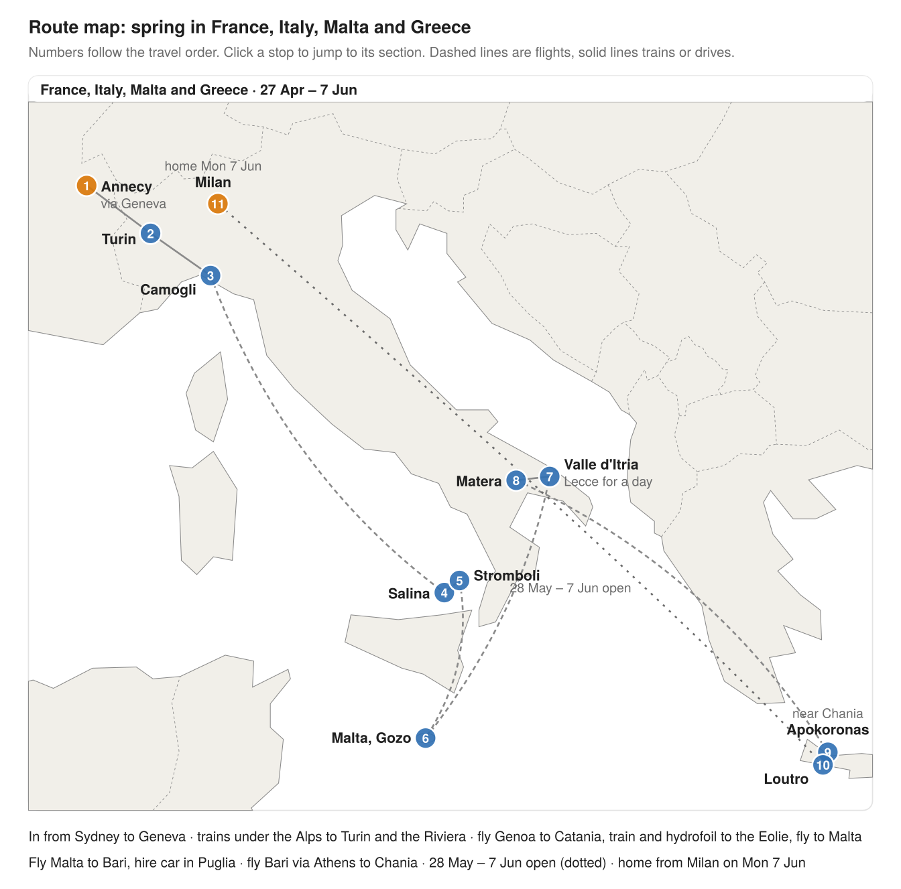

Jump to: Annecy · Turin and Liguria · Eolie · Malta · Puglia · Crete · 28 May – 7 Jun · What to book · To discuss with Kelly
Route map
Spring runs north to south and back: Annecy, Turin, the Riviera, the Eolie, Malta and Gozo, Puglia and Crete; the last ten days, 28 May – 7 Jun, are open. The late-summer trip, Tahoe and the Dolomites, is only if spring goes well.

Timeline
You fly out on Mon 26 Apr and home from Milan on Mon 7 Jun, landing Tue 8 Jun. Leave runs Mon 26 Apr to Tue 8 Jun, 32 working days, and you're back at work on Wed 9 Jun.
The plan at a glance
Thirty-two days of leave buy six weeks in Europe, Tue 27 Apr to Mon 7 Jun 2027. Nothing is fixed yet, so the dates follow the local calendar: each leg sits between the school holidays, long weekends and festivals that would fill it (see Fixed dates and assumptions). The route runs north to south and back: Annecy, Turin, the Riviera, the Eolie, Malta, Puglia and Crete as a couple; the last ten days, from Chania on Fri 28 May to the flight home from Milan on Mon 7 Jun, are open. It's also your first long trip together, so it has time apart built in, flexible bookings for the second half, and an easy way home for Kelly after Crete.
Annecy, 27 Apr – 1 May. Land in Geneva on Tuesday for four nights, after the local school holidays and before Ascension; Giulia comes down from Paris when it suits her.
Turin and Camogli, 1 – 4 May. A night in Turin, then two in Camogli, gone before Ascension and the fish festival on 8 – 9 May.
Eolie, 4 – 9 May. Fly Genoa to Catania on Tuesday; Salina for three nights, then Stromboli for two.
Malta and Gozo, 9 – 14 May. Fly Catania to Malta on Sunday afternoon; a night in Valletta, then four on Gozo, where the family may have its roots.
Puglia, 14 – 20 May. Fly Malta to Bari on Friday; a masseria in the Valle d'Itria for the weekend, with Lecce as a day out, then Matera.
Crete, 20 – 28 May. Via Athens to Chania; Apokoronas villages, then Loutro on the car-free south coast.
28 May – 7 Jun, to be decided. Fly out of Chania on Fri 28 May; where these ten days go is open. You fly home from Milan on Mon 7 Jun, landing Tue 8 Jun.
Giulia can take leave, so her visit to Annecy isn't tied to a holiday weekend; Annecy is about 3h45 from Paris by TGV.
If the open days end up in Lombardy, Vittoria is still at school, so she has the evenings, Republic Day (2 June) and the weekend of 5 – 6 Jun; Giulia could come to Milan that weekend.
Late-summer trip, 20 Aug – 7 Sep, only if spring goes well
Kelly's house at Lake Tahoe in high summer, then the Dolomites while the huts are open: a shorter second trip of 12 working days, to decide on after the spring trip.
California, 20 – 28 Aug. Kelly's house at Lake Tahoe, then San Francisco.
Dolomites, 29 Aug – 5 Sep. Val di Funes, below the Alpe di Siusi, Val Badia; fly home from Venice on Sun 5 Sep, landing Tue 7 Sep.
Leave: 32 days in spring, plus 12 if the late-summer trip goes ahead
| Trip | Away | Leave dates | Working days of leave | Public holidays inside |
|---|---|---|---|---|
| Spring trip | Mon 26 Apr – Tue 8 Jun | Mon 26 Apr – Tue 8 Jun | 32, long service | None; Anzac Day falls on Sun 25 Apr, and the King's Birthday is Mon 14 Jun |
| Late-summer trip, if it goes ahead | Fri 20 Aug (night flight) – Tue 7 Sep | Mon 23 Aug – Tue 7 Sep | 12, long service | None |
| Total | 32, or 44 with late summer |
Balances you gave, with no leave taken: 43.72 days of long service and 13.87 annual by 1 Feb 2027; 46.31 long service and 25.56 annual by 1 Sep 2027. The 32 spring days fit within the February balance. If the late-summer trip goes ahead, its 12 days leave about 2 days of long service, or can come partly from annual leave. That trip flies out on a Friday night after work, so it costs no leave for the flight out.
Why these places
Every stop is there for one of three reasons: it was on your list, it's in its best season on these dates, or it gives the off-the-beaten-track version of a place instead of the headline one.
| Destination | Where you stay or go | Why these |
|---|---|---|
| France | Annecy | Annecy on your list: the lake, the old town and the mountains above it, and an easy train for Giulia from Paris. You arrive the day after the local school holidays end and leave before the Ascension long weekend. Paris was dropped. The train under the Alps to Italy avoids one-way car-hire fees. |
| Italy: Turin and Liguria | Turin, Camogli, Portofino, San Fruttuoso | Not on your list. Turin splits the long train day from Annecy: elegant, quieter than Milan, with the arcades, the cafés and the Egyptian Museum. Then coastal walking at about 18 – 21 °C, before the beach season and before Camogli's fish festival, different from your May 2026 Cinque Terre trip. |
| Italy: Eolie | Salina, Stromboli | On your list. Early May is about 20 – 22 °C and quiet, with a cool sea of about 18 °C; Salina is the quiet green one. The Ascension crowds from France, Germany and Switzerland rarely come this far. |
| Malta and Gozo | A night in Valletta, then Gozo (a farmhouse in Għarb or Xagħra, or Xlendi cove) | Added at your request: possible Bordieri family roots. Mid-May is about 23 – 26 °C with the sea around 19 – 20 °C, before the June festa season and the 7 June national holiday. |
| Italy: Puglia | The Valle d'Itria (Cisternino or Locorotondo), Lecce for a day, Matera | On your list. Mid-May is about 20 – 24 °C, before the heat and the summer crowds; the Pentecost weekend goes to the countryside and Matera comes midweek. |
| Greece: Crete | West Crete and its south coast | Crete on your list. Late May is about 25 – 27 °C with the sea around 21 °C, after Greek Easter and before English half-term; villages and the car-free south coast instead of the resort strip. The Cyclades were dropped. |
| Dolomites (late-summer trip, if it goes ahead) | Val di Funes, Val Gardena hamlets, Alpe di Siusi, Val Badia | On your list, but closed for walking from February to May. Late August and early September have the huts open and settled weather, as the August crowds thin. Lago di Braies and Seceda skipped. |
| USA (late-summer trip, if it goes ahead) | Lake Tahoe (Kelly's house), San Francisco | Kelly's house is at Tahoe. Late August is high summer at the lake, warm enough to swim, after California's schools have gone back and before Labor Day; San Francisco is the jump-off for Europe. Wildfire smoke is the risk at this time of year. |
Fixed dates and assumptions
Nothing is fixed yet, so the dates follow the local calendar: each leg sits between the school holidays, long weekends and festivals that would fill it. These are the ones the plan steers round.
| Dates (2027) | What | How the plan avoids it |
|---|---|---|
| 10 – 26 Apr | French school holidays in Annecy's zone | You arrive in Annecy on 27 Apr |
| 13 – 18 Apr | Milan Design Week | The last days are open |
| 27 Apr – 16 May | Rome tennis Open | Rome, if at all, comes at the end of May |
| 30 Apr – 3 May | Greek Orthodox Easter (Sun 2 May) | Crete comes from 20 May |
| Sat 1 – Sun 2 May | May Day weekend in Italy | Turin on 1 May, Camogli from Sunday afternoon as the day-trippers leave |
| 6 – 9 May | Ascension long weekend in France, Germany, Switzerland and Austria | You're in the Eolie, which these visitors rarely reach |
| 8 – 9 May | Camogli fish festival; Venice Architecture Biennale opens; the Giro starts | You leave Camogli on 4 May; Venice, if at all, comes in June |
| 13 – 17 May | Turin Book Fair | Turin is on 1 May |
| 15 – 29 May | Pentecost, then Bavarian and Baden-Württemberg school holidays | Puglia and Crete, where they matter least; Liguria, the lakes and Venice are avoided then |
| Sat 29 May – Wed 2 Jun | Republic Day bridge; Giro finale in Rome on Sun 30 May (2027 route published 3 Nov 2026: Trieste 8 May to Rome 30 May, no stages in Liguria, Sicily or Puglia; Monza – Milan time trial on 23 May, before you get there) | The last days are open; Rome that weekend means the Giro crowds, while Milan empties from 1 June, with Vittoria free on 2 June |
| 31 May – 4 Jun | English school half-term | Only matters if the open days include Venice |
| Mon 7 Jun | Malta's national holiday, then the festa season | You leave Malta on 14 May |
| about 8 – 10 Jun | Italian schools finish and the beach season starts | You fly home on 7 Jun |
| 13 – 19 Jun | Annecy animation festival | Long gone |
| Mid-Sep | Most Dolomites huts close around 20 Sep | Late-summer trip, if it goes ahead |
Assumptions, flag any that are wrong:
Leave counts in working days. Fly out on Mon 26 Apr and land in Geneva on Tue 27 Apr; Mon 26 Apr to Tue 8 Jun is 32 working days, with no NSW public holidays inside. Fly home from Milan on Mon 7 Jun, land in Sydney Tue 8 Jun, back at work Wed 9 Jun.
Kelly flies out with you and stays to the end, or flies home from Chania after Crete if she'd rather; the second half is booked on refundable or changeable terms so it can shrink or stretch.
Kelly would rather not spend long hours on buses or in cars, so road legs are kept short, with trains, hydrofoils or flights for the long hops.
Passports: Marco Italian and Australian, Kelly Australian and US. Marco travels in Europe on his Italian passport, so the EU's coming ETIAS authorisation doesn't apply to him; Kelly will need it on either of her passports once it starts, and there's no start date yet, with reporting pointing to sometime in 2027.
Comfortable, characterful mid-range places to stay: guesthouses, agriturismi, masserie. No chains or resorts.
Spring: Annecy, Turin and Liguria, the Eolie, Malta, Puglia and Crete (27 Apr – 7 Jun)
Fly out on Mon 26 Apr and land in Geneva on Tue 27 Apr. Four nights in Annecy, where Giulia can come down from Paris, then Marco and Kelly have Turin, the Riviera, the Eolie, Malta and Gozo, Puglia and Crete. From Chania on Fri 28 May, after your birthday, to the flight home from Milan on Mon 7 Jun, the days are open.
Annecy, with Giulia, 27 Apr – 1 May (4 nights)
| Day | Where | What |
|---|---|---|
| Tue 27 | Annecy | Land in Geneva, then about 45 min by car or bus to Annecy; the old town's canals in the evening |
| Wed 28 | Annecy | The lake path by bike to Talloires |
| Thu 29 | Annecy | The walk up Mont Veyrier above the lake (2 – 3 h); the Semnoz may still have snow near the top |
| Fri 30 | Annecy | A boat across the lake and lunch in a lakeside village |
| Sat 1 May | Turin | May Day, a holiday in France and Italy, so check the train timetable. Train to Chambéry (50 min), then the high-speed train under the Alps to Turin (about 2½ h); about 3½ h in all |
Giulia can take leave, so she can come down from Paris by TGV (about 3h45) on whichever days suit her. Late April in Annecy is about 14 – 18 °C with showers likely, and the lake is too cold to swim. The local school holidays end on Mon 26 Apr, the day before you arrive, and you leave well before the Ascension long weekend (6 – 9 May), when the town fills.
Direct high-speed trains from Chambéry through Turin to Milan resumed in April 2025, after a 2023 landslide closed the line; Trenitalia runs four a day (Railin). Going by train avoids the large fee for dropping a French hire car in Italy.
Turin and Liguria, Marco and Kelly, 1 – 4 May (3 nights)
Sat 1 May: the train from Annecy to Turin, and a night there to split the journey. Sun 2 May: Turin to Genoa (about 2 h) and on to Camogli (about 30 min), arriving mid-afternoon as the weekend day-trippers leave. Early May on the Riviera is about 18 – 21 °C, green and in flower, well before the beach season. This stretch of coast is different from the Cinque Terre you saw in May 2026.
| Dates | Base | Nights | What to do |
|---|---|---|---|
| 1 – 2 May | Turin | 1 | The arcades of Via Po and Piazza San Carlo, a bicerin at Caffè Al Bicerin, the Egyptian Museum, and the lift up the Mole Antonelliana for the Alps at sunset. Sun 2 May: train to Genoa and Camogli, about 2½ h |
| 2 – 4 May | Camogli | 2 | The harbour and the focaccia di Recco on arrival. Monday: the promontory path to San Fruttuoso abbey (2 – 3 h) and the boat on to Portofino, then back by boat or bus for sunset on the waterfront. Tue 4 May: 40 min by train to Genoa by about 8 am, then the airport bus for the 10:15 flight |
Eolie, Marco and Kelly, 4 – 9 May (5 nights)
Tue 4 May: fly Genoa to Catania (Ryanair FR5027, 10:15 → 12:00, €55 on 1 Nov). Then the 13:45 Giuntabus coach from the airport to Milazzo port (€13 each, luggage included, about 2 h; the 12:30 if you're out of the airport quickly), arriving about 15:45, and an afternoon hydrofoil to Salina (about 1h35). Giuntabus confirmed by email on 4 Nov that from April to May 2027 there are eight coaches a day each way: from the airport at 10:00, 11:00, 12:30, 13:45, 15:30, 16:30, 17:30 and 19:00 (the last), and from Milazzo at 07:00, 08:30, 09:50, 11:00, 12:40, 13:45, 14:30 and 15:45 (the last). They say the summer times can still change, so check giuntabus.com closer to the date. the 2027 hydrofoil timetable is published at the end of 2026, per Liberty Lines. Early May is about 20 – 22 °C with the sea around 18 °C, cool for swimming, and the islands are quiet before the June season.
| Dates | Base | Nights | What to do |
|---|---|---|---|
| 4 – 7 May | Salina | 3 | Monte Fossa delle Felci (962 m, about 3 h up), Pollara, capers and Malvasia, granita and pane cunzato in Lingua |
| 7 – 9 May | Stromboli | 2 | Sunset walk to the 400 m viewpoint with an authorised guide (about 5 h); the summit is closed to visitors. Boat to Ginostra. Sun 9 May: early hydrofoil to Milazzo (about 2½ – 3 h with stops), the 11:00 or 12:40 coach to Catania airport, and the 17:20 flight to Malta |
Malta and Gozo, Marco and Kelly, 9 – 14 May (5 nights)
Sun 9 May: fly Catania to Malta (Ryanair FR368, 17:20 → 18:10, €18.99 each on 3 Nov; also 07:20 and 14:55). Mid-May is about 23 – 26 °C with the sea around 19 – 20 °C, before the June festa season and the 7 June national holiday. English is spoken everywhere.
| Dates | Base | Nights | What to do |
|---|---|---|---|
| 9 – 10 May | Valletta | 1 | Land in the evening; Valletta's walled baroque streets at night |
| 10 – 14 May | Gozo (a farmhouse in Għarb or Xagħra, or Xlendi cove) | 4 | Bus or taxi to Ċirkewwa and the 25-minute ferry to Mgħarr. The Citadel in Victoria, Ramla Bay's red sand, the cliff walks; the coast path from Marsalforn past the Xwejni salt pans, hand-worked by the same families for generations (buy salt from them; the harvest starts around May), then a swim in Marsalforn bay; a look for Bordieri family traces. Fri 14 May: an early ferry back and the 10:35 flight from Malta to Bari |
Puglia, Marco and Kelly, 14 – 20 May (6 nights, hire car)
Fri 14 May: fly Malta to Bari (Ryanair, 10:35 → 11:55 on the 2026 timetable), pick up the car and drive about an hour to the masseria. Mid-May in Puglia is about 20 – 24 °C, before the heat and the summer crowds. The Pentecost weekend (Sun 16 May brings a few German and Austrian visitors) goes to the countryside, and Matera comes midweek.
| Dates | Base | Nights | What to do |
|---|---|---|---|
| 14 – 18 May | Valle d'Itria (Cisternino or Locorotondo) | 4 | About 1 h from Bari. A masseria stay; white towns, dry-stone countryside by bike, Cisternino's butcher-grills. A day in Lecce (about 1 h) for the baroque old town and pasticciotto, and one for Polignano and the coast |
| 18 – 20 May | Matera (Basilicata) | 2 | About 1h15 by car. A cave room in the Sassi, the walk across the ravine in the Murgia park (2 – 3 h), the Sassi lit up at dusk. Thu 20 May: leave about 7:15, an hour to Bari airport, drop the car and fly Bari to Athens (Ryanair, 10:10 → 12:40), then Aegean or Sky Express on to Chania mid-afternoon. Separate tickets, so leave about 3 h in Athens. Two ways to take the risk out: leave Matera on the 19th and sleep a night in Athens, or ticket Bari → Chania through on Aegean or Sky Express if they sell the Bari leg, which protects the connection. Ryanair's own Bari – Chania and Malta – Chania flights only run from June, or one day a week in May |
Drive-and-wander extras: Cisternino's butcher-grills (pick your meat, they cook it); Locorotondo and Ceglie Messapica for quiet white towns and food; the coast road Otranto to Santa Maria di Leuca, with a swim at the Grotta della Poesia; Gravina in Puglia's gorge and Altamura's bread on the Matera day.
Crete, Marco and Kelly, 20 – 28 May (8 nights, hire car)
Late May in western Crete is about 25 – 27 °C with the sea around 21 °C, after Greek Easter and before English half-term. The Samaria Gorge normally opens in May. If Kelly would rather head home here, Chania → Athens connects to most long-haul flights.
| Dates | Base | Nights | What to do |
|---|---|---|---|
| 20 – 23 May | Apokoronas village (Vamos or Gavalochori) | 3 | Land in Chania late afternoon and drive about 30 min. Chania's old harbour, White Mountain foothill villages. Drive-and-wander ideas: Argyroupoli (springs, Venetian ruins), Polyrrinia hilltop village, Falassarna beach at sunset; Balos and Elafonisi are beautiful but crowded. Naturist-friendly: Kedrodasos (a short walk from Elafonisi, quieter), the far north end of Falassarna |
| 23 – 24 May | Loutro, south coast | 1 | Car-free village reached by boat; quiet once the day-trip ferries leave. Arrive in the afternoon, the evening there; next morning the coast path to Chora Sfakion (about 2 h) via Sweetwater Beach (naturist-friendly), back to the car |
| 24 – 26 May | To be decided, Crete | 2 | Open |
| 26 – 28 May | Chania | 2 | Two nights back near the airport, with your birthday dinner by the old harbour on Thu 27 May. Fri 28 May: fly out of Chania; where to depends on how the open days are used (Rome nonstop is about 2h20 on Ryanair or Wizz Air Malta, four or five days a week in season; Athens connects everywhere) |
28 May – 7 Jun, to be decided
Ten days between Chania on Fri 28 May and the flight home from Milan on Mon 7 Jun, left open for now. The Rome notes are kept in their own doc for whenever they're wanted; the Milan, Modena and Venice days are in this doc's history.
What to book in advance, and when
Everything with a timed slot, a quota or a sale window, flights and beds aside. In order of booking date, each the latest sensible moment worked back from the itinerary. Most of the rest of the trip is turn-up-and-go: regional trains, the Gozo ferry, the Loutro boats, the San Fruttuoso boat.
Spring
| When | What | How |
|---|---|---|
| Early Jan 2027, when sales open (about 4 months out) | Chambéry → Turin high-speed train, Sat 1 May; May Day has a reduced timetable, so take the first one that shows | Trenitalia or SNCF; Annecy → Chambéry is a regional train, no booking |
| Jan – Mar | Hire cars: Puglia (Bari, 14 – 20 May) and Crete (Chania, 20 – 28 May), free cancellation | Any broker; full-size boot for two bags |
| Early Jan 2027, once the timetable is published (Liberty Lines: end of 2026) | Liberty Lines hydrofoils, 4, 7 and 9 May: check the afternoon run to Salina on the 4th and the first boat out on the 9th, then decide the island order | libertylines.it; the Giuntabus coach is bought on the day or online |
| April | Kelly: ETIAS if it has started by then | europa.eu/etias |
| Mid-April, 2 – 3 weeks before | Stromboli sunset walk to the 400 m viewpoint, Fri 7 or Sat 8 May; May is quiet | An authorised guide (Magmatrek or similar); the summit stays closed |
| Last week of April | Turin, Sat 1 May: Egyptian Museum and the Mole lift; public holiday, timed entry | Museum and Mole websites |
Late-summer trip, 20 Aug – 7 Sep 2027
Tahoe, San Francisco and the Dolomites, only if spring goes well; the day-by-day, its flights and its bookings are on their own tab: Late summer
Flights
Priced on Google Flights on Sun 25 Oct 2026: A$ per person including taxes, for the cheapest fare on the flight that fits the plan. Ryanair, Wizz and Scoot fares don't include bags. A dash means economy on a short hop. Most spring legs are still to price on the new dates.
Spring trip
| Leg | Best fit | Times | Economy | Business |
|---|---|---|---|---|
| Sydney → Geneva, both, Mon 26 Apr | One stop via the Gulf or Asia, landing Tue 27 Apr | — | not yet priced | not yet priced |
| Genoa → Catania, Tue 4 May | Ryanair nonstop | FR5027, 10:15 → 12:00 | about 100 + bag (€55, Ryanair, 1 Nov) | — |
| Catania → Malta, Sun 9 May | Ryanair nonstop | FR368, 17:20 → 18:10 | €18.99 each on 3 Nov | — |
| Malta → Bari, Fri 14 May | Ryanair nonstop | 10:35 → 11:55 (2026 timetable) | not yet priced | — |
| Bari → Athens → Chania, Thu 20 May | Ryanair to Athens, then Aegean or Sky Express on separate tickets; or one through ticket if Aegean or Sky Express sell the Bari leg, or a night in Athens | 10:10 → 12:40, then mid-afternoon | about 225 (priced for September) | — |
| Chania → onward, both, Fri 28 May; destination open | Depends on the open days; Rome nonstop is about 2h20 on Ryanair or Wizz Air Malta, Athens connects everywhere | — | not yet priced | — |
| Milan → Sydney, both, Mon 7 Jun | One or two stops, landing Tue 8 Jun | — | not yet priced | not yet priced |
Priced so far, per person: about 2,100 in economy and 12,200 in business for Sydney → San Francisco → Venice, plus about 100 for the Genoa → Catania hop. Everything else is still to price.
Where the hidden savings are
Skip Reno. Pick up a car at San Francisco airport, drive to Tahoe and back (about 3.5 h each way) and return it there before the flight to Venice: no extra flight and no one-way fee.
Turkish Airlines' round-the-world fare for the late-summer trip. It goes from Australia via North America and Istanbul to Europe, and back via Istanbul and Asia, with free stopovers: the late-summer shape (Sydney → San Francisco, stop, → Istanbul → Venice; Venice → Istanbul → Singapore → Sydney). Australian Frequent Flyer's sample of that shape cost 2,105 in economy and 7,862 in business in 2024. It's sold through agents only and prices may have moved, so get a quote before buying the late-summer legs.
Mix airlines in business: TAP via Lisbon, San Francisco → Venice, is 3,606 against 5,306 on United.
Book the bag with the low-cost hops (Ryanair Genoa → Catania, Catania → Malta, Malta → Bari and Bari → Athens); it costs more at the airport.
Leave buffers on separate tickets. Bags don't transfer between them, so allow at least three hours, or a night, on self-made connections.
Checked and not worth it
A return starting in Italy to cover both the June flight home and the flight back out: about 3,000, more than two one-ways.
One round-the-world ticket for both trips: they now run in opposite directions.
Hidden-city tricks: they put the later legs and checked bags at risk.
When to book
Now: the spring long-haul as one open-jaw return on one airline (Sydney → Geneva, Milan → Sydney) for both of you, which usually prices well below two one-ways; changeable fares suit a first long trip together. Hold the late-summer flights until after spring.
Two to four months out: Ryanair, Aegean, the Liberty Lines hydrofoils once the spring timetable is out around February, and the Puglia and Crete hire cars.
Also early: Annecy, Turin, Camogli, Salina, Stromboli, Valletta, Gozo, the Puglia masseria, Matera and Loutro. Book the second half, from Crete on, with free cancellation.
To discuss with Kelly
The three days where the connections are tight, each with the way to loosen it. Everything else in the itinerary has slack built in.
Tue 4 May, Camogli → Genoa airport → Catania → Milazzo → Salina. Four connections in one day. The morning works on paper (train by 8:00, Volabus, bag drop for the 10:15 closes at 9:35) but one late regional train breaks it; a taxi from Camogli straight to the airport is about 40 minutes and €70. The afternoon is the unknown: the coach reaches Milazzo at 15:45, and whether a hydrofoil still leaves for Salina after that is the question for the 2027 timetable, due from Liberty Lines at the end of 2026. If none does, the fix is a night in Milazzo or Lipari, not a later flight.
Sun 9 May, Stromboli → Milazzo → Catania → Malta. One hydrofoil, one coach, one flight, nothing behind them. The 07:15 boat gives four hours of slack; if the wind cancels it, the 11:50 only works with a taxi from Milazzo (about 1h45) instead of the coach, and bag drop for the 17:20 is close. This day decides whether Salina should come last instead of Stromboli.
Fri 14 May, Gozo → Malta airport → Bari. The 10:35 flight means the 6:45 ferry and a taxi across Malta, so up at 5:30 on the last Gozo morning. Not fragile, just early. The alternative is three nights on Gozo and the last night near the airport.
Open questions
Silvia and Vittoria: if the open days are in Lombardy, evenings from 1 Jun, Republic Day (2 June) and the weekend of 5 – 6 Jun.
Giulia: which days in Annecy (27 Apr – 1 May); and would she join the Dolomites in September?
Kelly: the whole trip, or home after Crete? No need to decide until May.
Economy or business on the long legs? Any Qantas, Velocity or Amex points between you, since business on points could beat everything in Flights?
Eolie, once the 2027 hydrofoil timetable is out (Liberty Lines say end of 2026: check libertylines.it in the first week of January): would Stromboli first and Salina last work? Leaving from Salina on Sun 9 May gives a second boat to Milazzo if the 07:15 is cancelled by wind; it only works if the 13:45 coach on Tue 4 May meets an afternoon hydrofoil that still calls at Stromboli. Asked Liberty Lines by email on 8 Nov 2026 (afternoon run on 4 May, Salina – Stromboli on 7 May, first boat to Milazzo on 9 May); they replied the same day that the 2027 timetables will be published at the end of 2026.